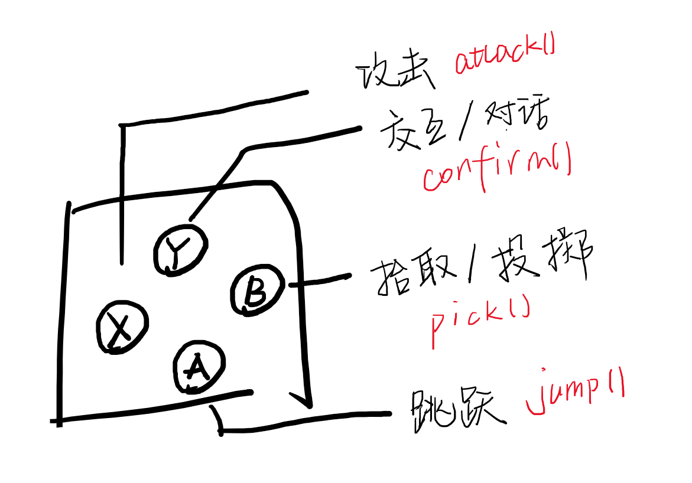
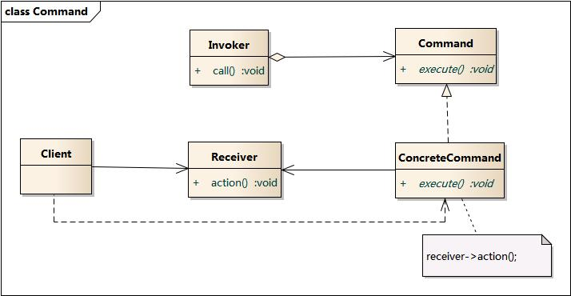

0x00
新坑《游戏编程模式》（作者 Robert Nystrom）。
在 Unity 下，用 C# 做了简单的实现，传送门：
链接：https://pan.baidu.com/s/1DozDp_yTc3Tu8icPICAyNw
提取码：qotg
0x01 命令模式
“将一个请求封装成一个对象，从而使我们可以使用不同的请求、队列或日志将客户端参数化，同时支持请求操作的撤销与恢复。”
简单地说，在这种模式下，命令就是一个对象化的方法调用。
0x02
命令模式的好处：对命令的发送者和接收者完全的解耦（模式动机）。
在进行包含“回放”功能的游戏中，使用命令模式可以更简单的通过历史指令，达到回放的目的。另外在制作如工具时，命令模式可以简单的实现撤销功能。
玩了《武士刀·零（Katana Zero）》，游戏在每一个场景结束，都会有一个“录像带”的功能，即对成功通关的操作进行回放，而且会将“子弹时间”取消掉，这种功能的实现，就可以使用命令模式。很多平台 2d 游戏都会在一个场景通过后用这种方式来回放，《超级食肉男孩（super meat boy）》会在过关后将每一次尝试的结果同时回放，还是很有趣的。
0x03
为了简要地理解命令模式，书中从配置输入进行讲解，游戏简单讲就是一个处理玩家输入的系统，必定有一块代码是用来读取玩家原始输入的，按钮点击，键盘事件，鼠标点击等等。

上面的网盘中的例子中就对玩家输入进行了一层间接调用的封装，所有的输入会被读取并创建对应的命令对象，并在指令队列中管理。网上找了一个类图看看:

Command 在例子中是一个抽象类，需要后面特定的具体命令（Concrete Command）继承，并实现 excute() 与 Undo() 两个主要方法，实现调用和撤销。命令的接收者（Receiver）保存在类中，需要构造时传入特定的接收者。这样的好处是，我们的命令对象不仅可以响应玩家的输入，而是可以根据传入的对象，控制任意一个需要被控制的对象，AI 也可以简单地提供命令对象来执行。
命令模式需要考虑的一点是，所有可执行的命令都是对象，因此如何优化这些对象的内存，进行垃圾收集（比如多个相同的无状态的纯行为命令会浪费内存）。
而在 Lua 中，函数第一类值，上面的命令模式可以直接使用闭包来实现，换言之，在某些方面，命令模式对于没有闭包（或者不好用的闭包实现）的语言来说是模拟闭包的一种方式。
0xff
说点什么呢，就天真的加油呗。